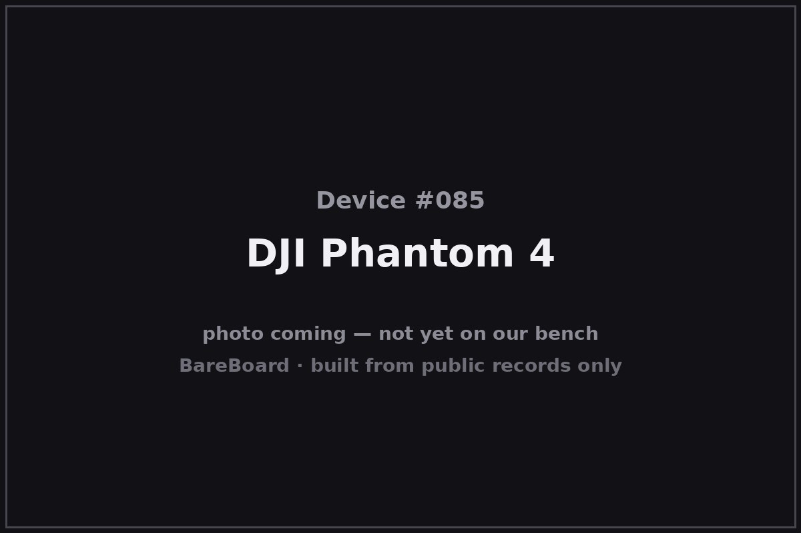

The Autopsy Report · Device #085
DJI Phantom 4
The Phantom 4 is the drone that taught consumer aircraft to see: announced in March 2016, it was the first mass-market drone with forward obstacle avoidance, paired with subject tracking and tap-to-fly autonomy. The Mavic Pro stole its spotlight six months later, but the Phantom 4 is the ancestor of every drone that now refuses to fly into a wall.
What is this thing?
The DJI Phantom 4 is a quadcopter drone, model WM330A, built around a 12-megapixel 1/2.3-inch camera shooting 4K/30 on a 3-axis gimbal. No Film School Its headline feature was obstacle avoidance: a pair of forward-facing vision sensors that let the drone see and stop before hitting things — a first for a consumer drone. PetaPixel
Whose box is this?
This one isn't on our bench — yet. Nothing here comes from a BareBoard teardown: no disassembly, no boot logs, no bench measurements, no firmware in our hands. Everything below is built from public records — the government's FCC filing, the manufacturer's own documents, and contemporary press — read carefully and cited line by line. That's the deal with these reports: when a fact can't be verified from a public record, we say so, out loud.
The moment this hardware crosses our bench, this report gets a second act: our own photos, our own measurements, and anything the public record got wrong gets corrected.
A short history
DJI announced the Phantom 4 on March 1, 2016, priced at $1,399. No Film School Alongside obstacle sensing it introduced ActiveTrack (follow a moving subject automatically) and TapFly (tap a point on the screen and the drone flies there, dodging obstacles on the way) — the first time a consumer drone could meaningfully fly itself. PetaPixel
A note for researchers: the Phantom 4 is not the Phantom 4 Pro (a later, upgraded model) or the Phantom 4 Pro V2.0. The filings and the hardware differ — don't merge them.
The outside

The Phantom 4 keeps the classic Phantom silhouette — a white, bulbous body with fixed landing gear — but the giveaway is the nose: two forward vision sensors flanking the gimbal camera, the eyes that made it famous. The user manual documents the airframe, battery, and controller layout in full. ManualsLib — Phantom 4 manual
Reading the plastic
Mold marks, date wheels, material codes — the shell's birth certificate. This is bench-only evidence: without the physical unit in our hands, there's nothing honest to read here. What the enclosure looks like is described above from public photos; what's molded into it awaits the bench.
The board
No internal-photograph exhibit for the WM330A has been verified in open research, so this section stays honest and short: the board layout is unknown. What the public record does tell us is the sensing architecture — forward stereo vision plus downward positioning sensors, documented in the manual and contemporary press — and a 5,350 mAh battery delivering a claimed 28 minutes of flight. ManualsLib — Phantom 4 manual
Under the microscope: the chips
Unknown. Without a verified board photograph or bill of materials for this exact model, naming chips would be fabrication. The vision-processing and flight-control silicon awaits a bench unit.
The government's file on this box
The FCC equipment authorization is FCC ID 2AHAY-WM3301601, model WM330A, grantee SZ DJI BaiWang Technology Co., Ltd. fccid.io filing The filing's grant is recorded as February 22, 2016. Don't confuse this filing with the Phantom 4 Pro or Pro V2.0 — different models, different authorizations.
Listening in
We have no boot log for this device — no unit on the bench means nothing to listen to. But the posture is worth stating up front, because it governs everything BareBoard ever does with a live device.
We listen, we don't knock. A serial console is a place to watch a device narrate its own startup, not a place to log in, change things, or break past anything the manufacturer locked. On our bench we attach read-only: power and ground, one receive wire, and silence on the transmit line. We never use JTAG or SWD debug headers to take control, never extract or modify firmware, never hunt for credentials, and never publish anything that would let someone else bypass a lock or defeat authentication.
When this device arrives, the first question will be: where does it talk, and does it talk to us unprompted? Until then, that question stays open.
What we found
- The Phantom 4 (model WM330A) was announced March 1, 2016 at $1,399 — the first consumer drone with forward obstacle avoidance.
- ActiveTrack and TapFly made it the first consumer drone that could meaningfully fly itself.
- Its internal hardware is undocumented in public records; keep it separate from the Phantom 4 Pro filings.
What we didn't do
- We never opened a unit, attached to a debug port, or powered one up for this report.
- We never extracted, modified, or shared any firmware or software.
- We never published or used any credentials, keys, or bypass techniques.
- No boot logs, no bench measurements, and no photos of our own — because there is no unit of ours to photograph. The device photo above is credited in its caption.
By the numbers
- Launch: March 1, 2016
- Model: WM330A
- Camera: 12 MP 1/2.3″, 4K/30, 3-axis gimbal
- Flight time: 28 minutes (advertised), 5,350 mAh battery
- Price at launch: $1,399
- FCC ID: 2AHAY-WM3301601
- Bench status: Not yet on our bench
Words to know
- Obstacle avoidance
- Sensors that detect objects in the flight path and stop or reroute the drone automatically.
- ActiveTrack
- DJI's subject-tracking mode: the drone follows a moving person or object on its own.
- Gimbal
- The motorized 3-axis mount that keeps the camera steady.
Sources & confidence
- DJI Phantom 4 announced ($1,399) — No Film School, Feb 2016 link — Confirmed
- DJI announces Phantom 4 quadcopter with Active... — GlobeNewswire/DJI press release link — Confirmed
- The DJI Phantom 4 is a camera drone that can fly itself — PetaPixel, Mar 2016 link — Confirmed
- Phantom 4 user manual — ManualsLib link — Confirmed
- FCC filing 2AHAY-WM3301601 (grantee: SZ DJI BaiWang Technology Co., Ltd.; grant recorded 2016-02-22) — fccid.io link — Likely
- Internal hardware (board layout, chip list) — no verified public exhibit found — Unknown
Legal note. BareBoard is an educational project. Everything on this page is derived from public records — our own bench work begins only when hardware arrives. We don't publish, host, or distribute firmware, keys, passwords, or credentials, and nothing here bypasses a lock, defeats authentication, or extracts software from a device. Product names and trademarks belong to their respective owners and appear here only to identify the hardware. If you believe anything here infringes your rights, contact us and we'll address it promptly.